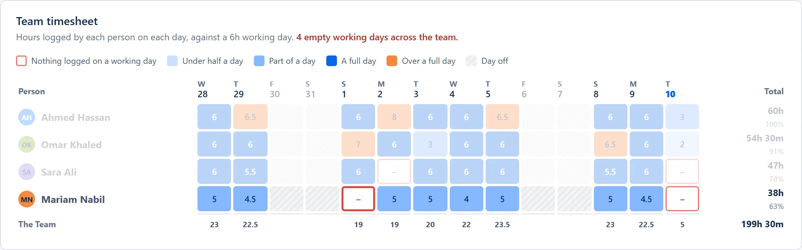
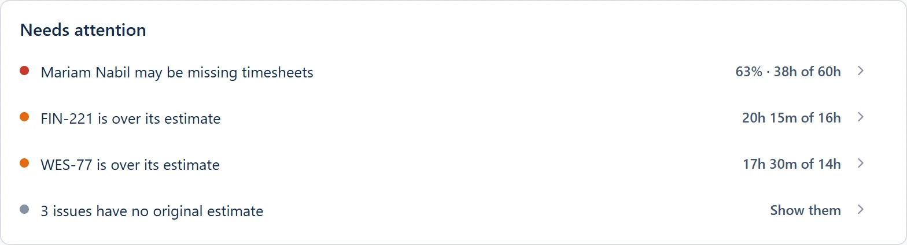
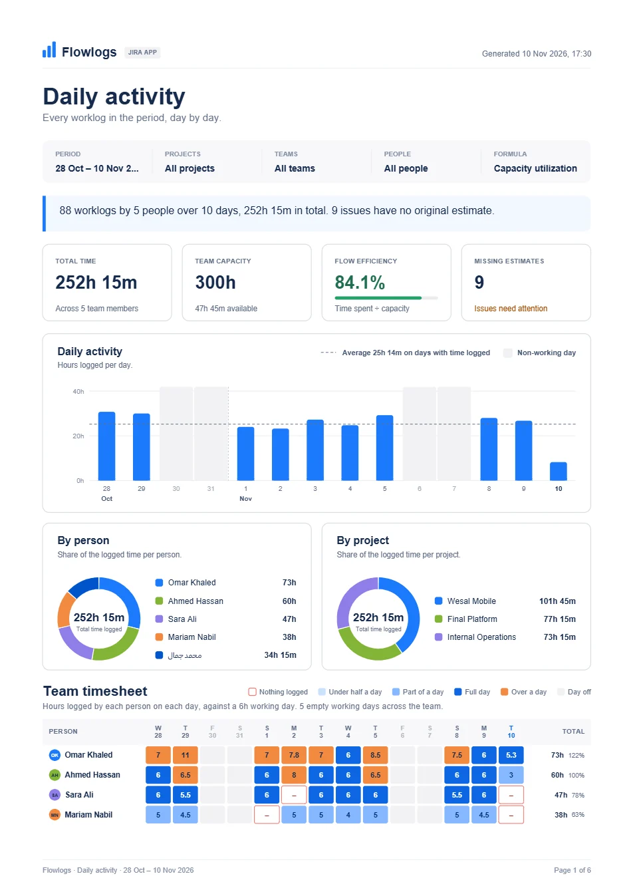
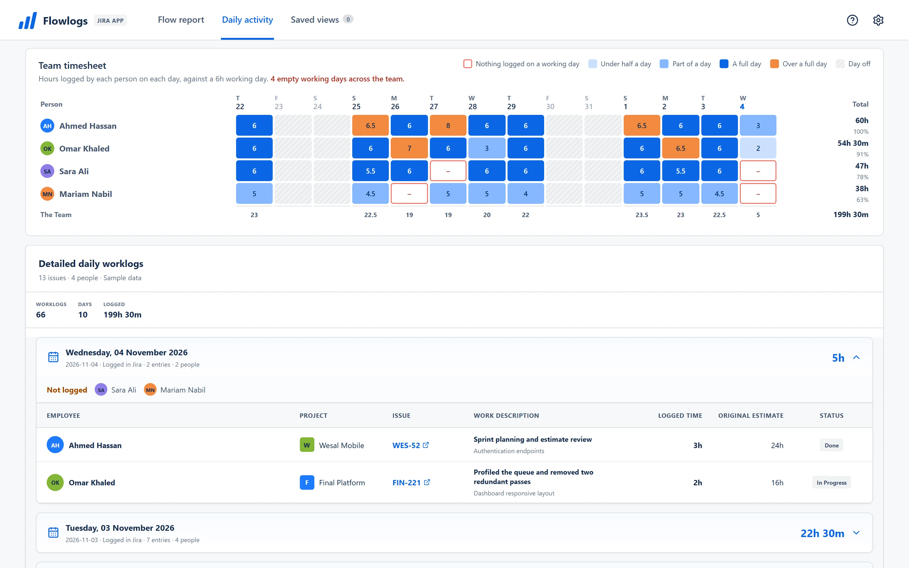
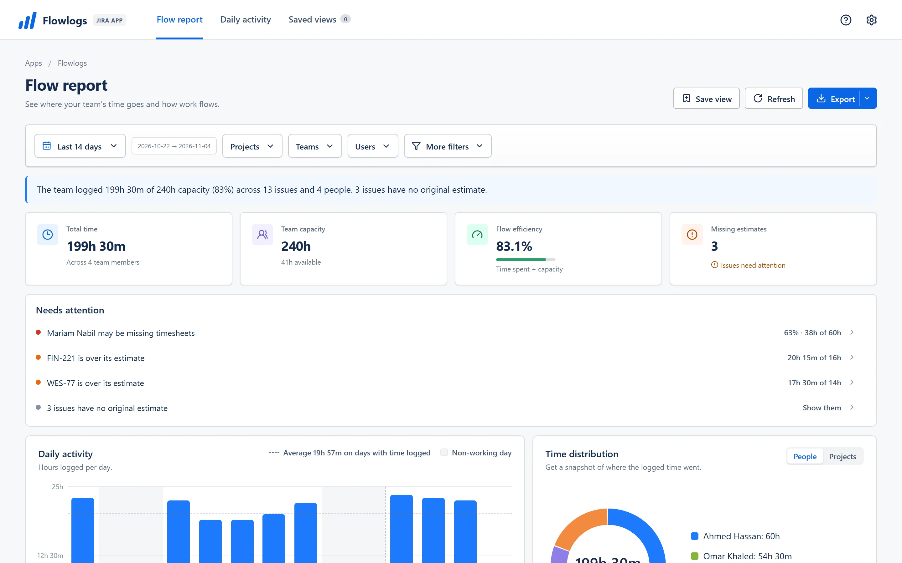
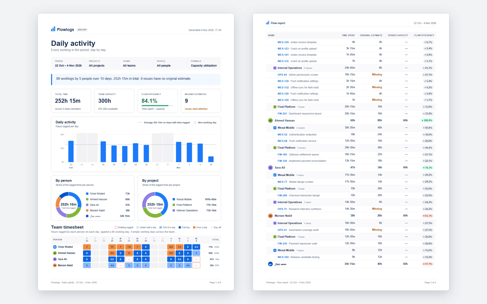

See who logged what, and who didn't.
Flowlogs turns the worklogs your team already keeps in Jira into a team timesheet, a capacity report and a PDF you can send. There is nothing to set up.
Runs inside Jira. Your data never leaves Atlassian.


On 1 Nov, Mariam logged nothing. Flowlogs already flagged it: 63% of capacity.
An empty working day
Mariam logged nothing on 1 Nov. Every other working day in her row is filled.
Flowlogs flags it
Needs attention puts Mariam first: 63% · 38h of 60h.
The report already says so
The PDF for the sprint review shows the same gap, with the charts and totals.

The Thursday problem
You message four people to ask if they logged their hours.
You export worklogs to a spreadsheet to answer one question.
You guess whether the team can take on the next sprint.

Missing timesheets stand out
Every person, every day, coloured against a working day; a day with nothing logged gets a red outline. Spot missing logs before the sprint review.
Capacity and estimates in one view
Total time, capacity and flow efficiency up top, then every number traced from person to project to issue. See exactly where your team spent their time.


A report that explains itself
An A4 PDF with the charts and the timesheet, plus Excel and CSV that match the screen. Send it to management with one click.
Set up in the time it takes to read this
Install Flowlogs from the Atlassian Marketplace.
Open Apps, then Flowlogs, in Jira.
Pick a date range. The worklogs are already there.
Your Jira data stays in Jira
Reads Jira as you, so nobody sees more than Jira already shows them.
Settings and saved views live only in Atlassian Forge storage.
No servers of ours, no tracking.
Exports are created in your browser.